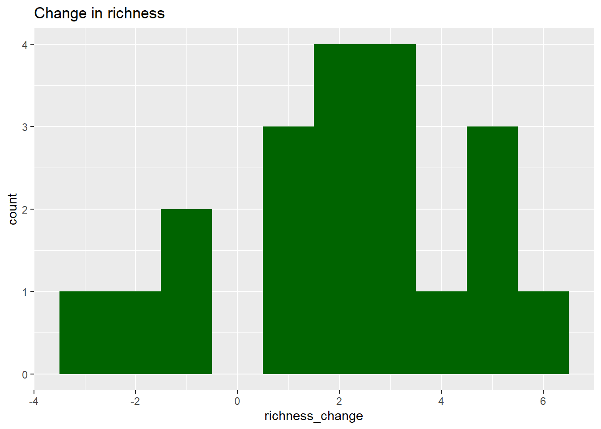

Natural area protection is one of the key management strategies for preserving biodiversity. However, many landscapes are under strong economic and development pressures, and the effectiveness of conservation measures must be demonstrated.
A few years ago, the government implemented protection measures across several natural sites, including wetlands, forests, and grasslands. These measures included limiting human access (e.g., restricting vehicles and public entry), restoring vegetation, and controlling invasive species.
Data were collected: Before protection (baseline) and After 2 years of protection. At each site, local managers measured:
🌱 Species richness (number of species)
🌿 Vegetation cover (%)
🐸 Abundance of an indicator speciesEuropean tree frog (Hyla arborea) ( Sensitive to environmental change and Reflect ecosystem health)
A preliminary report compared the “before” values vs the“after” values , aiming to demonstrate that the protection has improved the natural areas. However, the conclusion was ⚠️“There is no clear improvement after protection.”
And the government is facing the decision to revert area protection. A key aspect that the preliminary study didn’t consider is that the protected areas are very different from each other. Some are naturally rich ecosystems, other are degraded, some are large, others small. This creates a huge between-site variability.
Should we check if this data is normally distributed?
💡 Click for discussion
The distributions overlap strongly → unclear effect.
BUT this ignores that each point comes from the same site.
An alternative plot could be a violin plot or a box plot that shows in the X axis the before and after data separately. If we want to consider the differences, my preference is a cleveland dot plot.
We could test if this data is normally distributed, but depending on the test we choose it might have different requirements
🔍 Why might this be misleading?
Tip
Sites are very different from each other!
🔗 Visualisation 2: Pairing
ggplot(data, aes(x = richness_before, y = richness_after)) +geom_point(size =3) +geom_abline(slope =1, intercept =0, linetype ="dashed") +labs(title ="Each site before vs after")
data$richness_change <- data$richness_after - data$richness_beforeggplot(data, aes(x = richness_change)) +geom_histogram(bins =10, fill ="darkgreen") +labs(title ="Change in richness")

Important✍️ Question 4. Richness change
Now answer:
👉 Is the average change positive? (Calculate it in R, you know how).
👉 Are the differences (after-before) approximately normally distributed?
👉 Are all sites improving?
Can you add a vertical line at the 0 value so we can clearly distinguish the sites that improved and the sites that went worse? Try to add as well the average value.
💡 Click for discussion
Calculate the average change by mean(data$richness_change). Not all sites are improving, but since the mean is positive, most of them are (in terms of species richness). Add the vertical line with geom_vline().
A normal distribution of the differences look reasonable enough.
🧠 Concept Check
Warning
❌ Wrong question
Are before and after different?
✅ Correct question
Is the change within sites different from zero?
Paired t-test
data: data$richness_after and data$richness_before
t = 3.7601, df = 19, p-value = 0.001325
alternative hypothesis: true mean difference is not equal to 0
95 percent confidence interval:
0.9088952 3.1911048
sample estimates:
mean difference
2.05
Welch Two Sample t-test
data: data$richness_after and data$richness_before
t = 0.75905, df = 37.851, p-value = 0.4525
alternative hypothesis: true difference in means is not equal to 0
95 percent confidence interval:
-3.418102 7.518102
sample estimates:
mean of x mean of y
27.45 25.40
Important✍️ Question 5. Compare tests
Compare the two results:
Which test detects an effect?
Why are they different?
💡 Explanation
Paired test removes variation between sites → clearer signal.
Unpaired test includes all variability → weaker signal.
🐸 Indicator Species: Frog
Now it is your turn, provide further evidence for the impacts of nature protection with the data of the indicator species. This time you will have to code it yourself.
# Calculate frog_change here># Visualise the distribution of frog_change>
This frog species is an “indicator species”, and therefore is strongly informative of the “health of the habitat”. Sometimes this could be a better indicator rather than the number of species (which could include invasive species for example).
Do NOT just say “significant” or “not significant”. Explain: - Direction of change - Strength of evidence (effect size) - Uncertanity - Biological meaning
🎯 Test yourself
Important
Pairing removes baseline differences between sites, but how could we account for broader environmental changes, such as global temperature increases?
Even when data are naturally paired, should we always use a paired test? Can you think of an example where, despite having a before/after design or repeated measurements, a paired test might not be appropriate?
Since not all sites improved, would you suggest further data exploration? For example, should we analyse results by habitat type? What other factors might determine the success of area protection, and therefore, what additional variables would you include in the dataset (e.g., protected area size)?
Is a paired test a two-sample test? (Hint: No — it is a one-sample test on the differences.)
Why is the p-value not the only aspect that matters? Why does effect size matter as well?
You have heard that CBD production in plants might increase under mild drought stress, and just for learning purposes, you want to try it. Since you want to measure the concentration of that magical compound at different water availability levels, how would you design the experiments in terms of number of plants? Would you:
Apply a progressive drought treatment to the same plants and compare before and after measurements, or
Use two groups of plants, one well-watered and one exposed to drought?
Would your choice of design affect the statistical test you use? Explain your reasoning and how you would decide on the experimental design.
After completing this exercise, I would contact the company to show them the results. Do you think this could be a good way to represent the results? What would you add/change?
If the image is not displayed [find it in this link:](https://unioxfordnexus-my.sharepoint.com/:i:/g/personal/zool2620_ox_ac_uk/IQCISLj_rsTmS6WAK4loaUgfAfmeNQswO7wSQfSKEgnAVig?e=sR7akP)